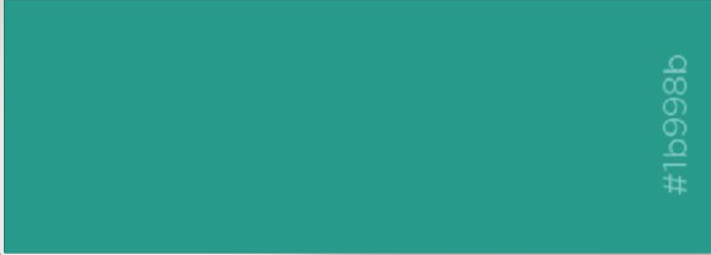
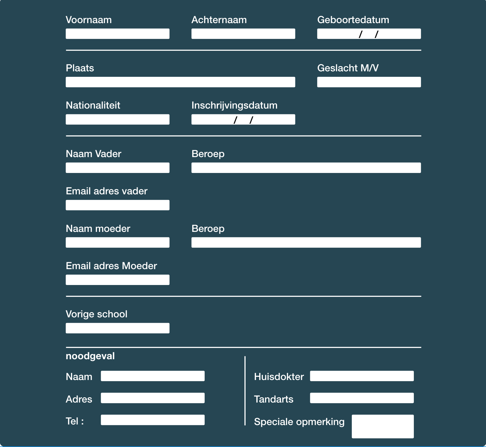
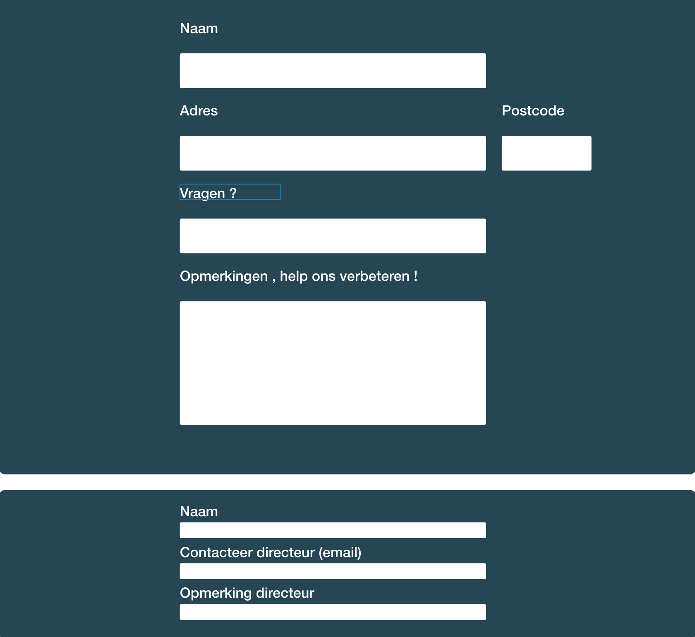

Digital styleguide
Kleuren
Typografie
Google font lato
Google font roboto ( meest gebruikt)
Knopppen
onze bijzondere opvang
Formulier
inschrijvingsformulier
contactformulier
Componenten
Missie
KBO-scholen zijn ‘warme’ scholen waar elk kind welkom is, waar kinderen en leerkrachten elkaar kennen en zich thuis voelen, waar ze met hun vreugde en verdriet terecht kunnen. KBO-scholen zijn scholen die zich laten inspireren door de persoon van Jezus Christus. KBO-scholen zijn scholen waar kinderen uniek mogen zijn, waar elk talent de nodige aandacht krijgt.
Visie
KBO-scholen zijn ‘warme’ scholen waar elk kind welkom is, waar kinderen en leerkrachten elkaar kennen en zich thuis voelen, waar ze met hun vreugde en verdriet terecht kunnen. KBO-scholen zijn scholen die zich laten inspireren door de persoon van Jezus Christus. KBO-scholen zijn scholen waar kinderen uniek mogen zijn, waar elk talent de nodige aandacht krijgt.
opvoedingsprojecten
KBO-scholen zijn ‘warme’ scholen waar elk kind welkom is, waar kinderen en leerkrachten elkaar kennen en zich thuis voelen, waar ze met hun vreugde en verdriet terecht kunnen. KBO-scholen zijn scholen die zich laten inspireren door de persoon van Jezus Christus. KBO-scholen zijn scholen waar kinderen uniek mogen zijn, waar elk talent de nodige aandacht krijgt.